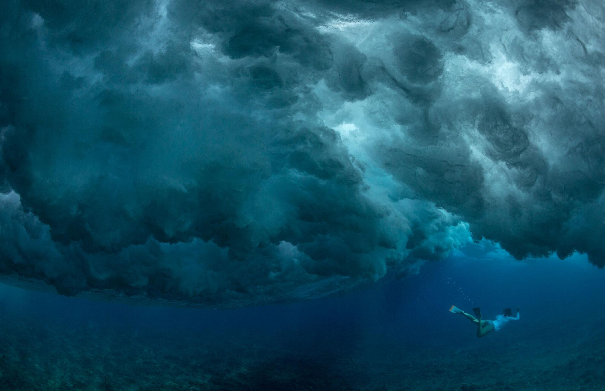
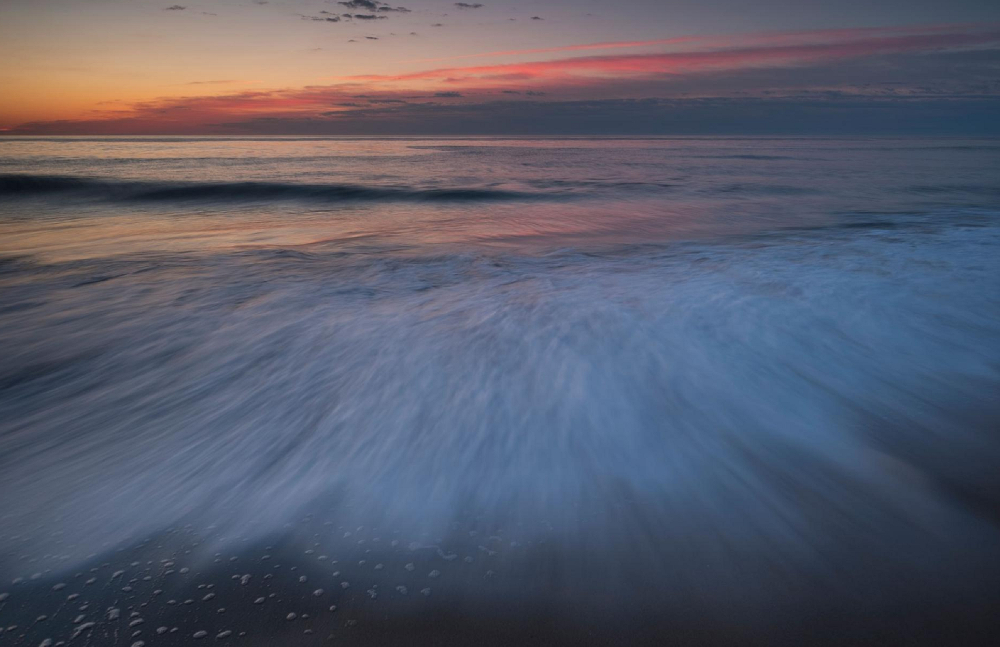
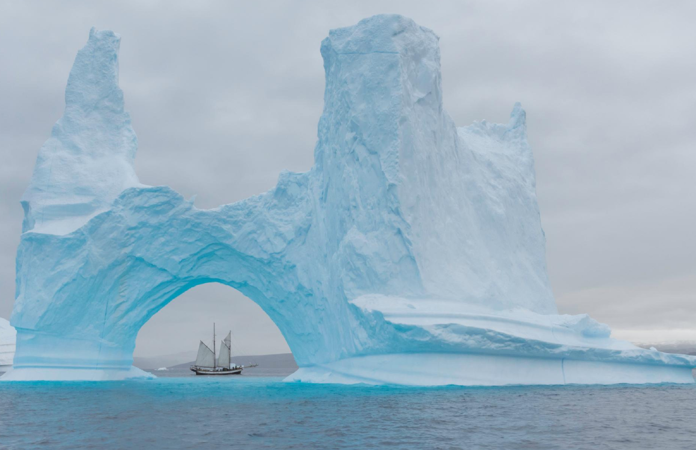

WATCH & APPRECIATE
Blue Planet II is a 2017 British nature documentary series on marine life produced by the BBC Natural History Unit. Like its predecessor, The Blue Planet (2001), it is narrated and presented by naturalist Sir David Attenborough, while the main music score was composed by Hans Zimmer.
EXPLORE & PHOTOGRAPHS
Go further anytime, anywhere
The oceans are home to millions of Earth's plants and animals—from tiny single-celled organisms to the gargantuan blue whale.
A black-legged kittiwake soars past an Arctic Ocean iceberg in Svalbard, Norway. We had to keep in mind that icebergs do roll.

The Atlantic Ocean, seen here at sunrise in Delaware, acts like a giant conveyor belt, pushing warm and cold currents around the world
You never realize how massive some of the icebergs are and how small your schooner is.
Have you ever heard of the major basins?
How's the world's biggest ocean looks like ? How huge is it ?
Is it affected by climate change ? How will it becomes in the next twenty years ?
Let's explore into the Atlantic Ocean, the Pacific Ocean and the Arctic Ocean together !
What's more ?
Once in a lifetime adventures. Think further anytime, anywhere
THE ATLANTIC OCEAN has been a key avenue of trade and travel. Stretching from the Arctic Circle to Antarctica, the Atlantic Ocean is bordered by the Americas to the west and Europe and Africa to the east. It's more than 41 million square miles, the second-largest ocean on Earth after the Pacific Ocean.
Scientists and geographers broadly separate the Atlantic in terms of NORTH AND SOUTH. The North Atlantic and South Atlantic each have distinct ocean CURRENTS that influence weather around the world.
THE PACIFIC OCEAN is the largest and deepest ocean on Earth. It spans 60 million square miles from California to China, and in certain regions extends tens of thousands of feet below the surface of the water.
To get a sense of just how immense the Pacific Ocean is, you could put all of Earth's landmasses together, and the Pacific would still be LARGER. Scientists and geographers broadly separate the Atlantic in terms of north and south. The North Atlantic and South Atlantic each have distinct ocean currents that influence weather around the world.
THE ARCTIC OCEAN is Earth's northernmost body of water. It encircles the Arctic, and flows beneath it. Most of the Arctic Ocean is covered by ICE throughout the year—although that is starting to change as temperatures climb. Though it's the world's smallest ocean—spanning 6.1 million square miles—the Arctic is now receiving unprecedented international attention. Scientists are racing to understand how warming temperatures will alter Arctic Ocean waters—and by extension the rest of the climate—and world leaders are racing to control newly opening waters.
The Arctic Ocean is WARMING faster than anywhere else on Earth and feeling the onslaught of climate change.